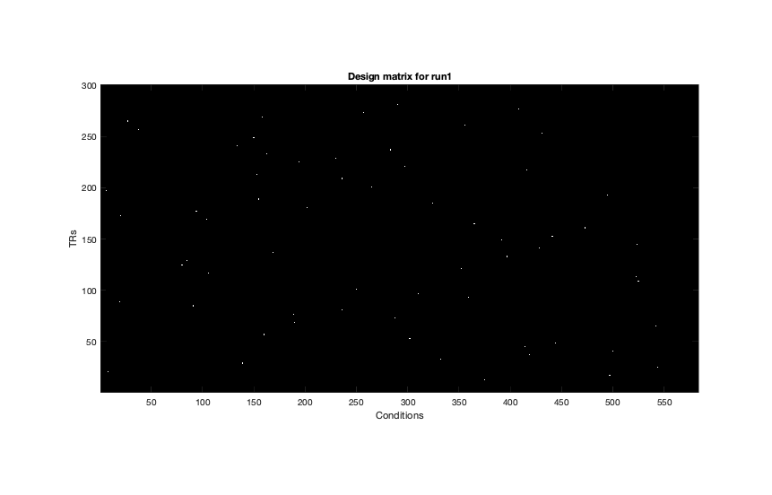
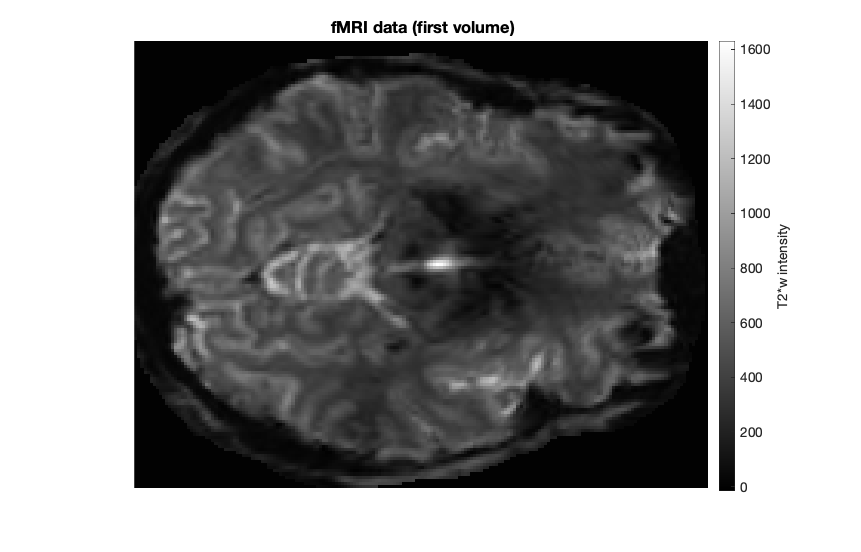
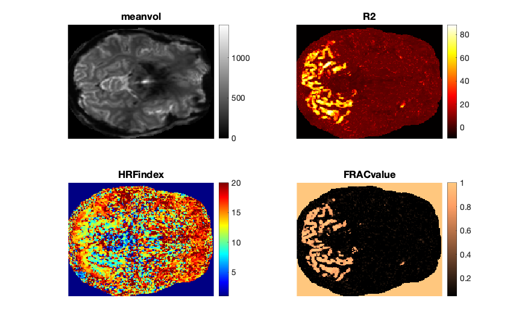
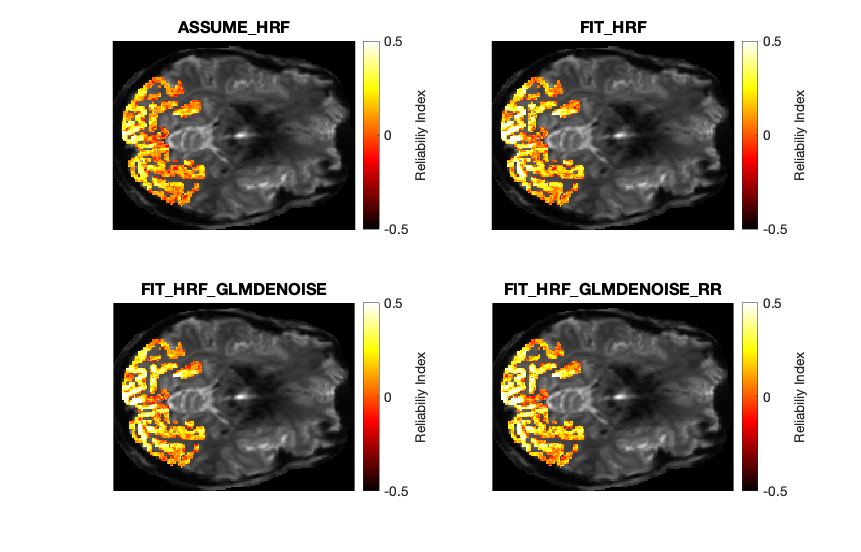
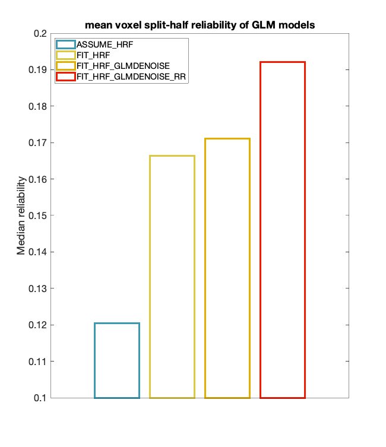

Contents
- Add dependencies and download the data.
- Data overview.
- Call GLMestimatesingletrial with default parameters.
- Important outputs.
- Plot a slice of brain with GLMSingle outputs.
- Run standard GLM.
- Compare GLM results.
- Calculate reliability index.
- Plot reliability index as an overlay.
- Plot median reliability for each GLM.
Add dependencies and download the data.
% add path to GLMsingle % You also need fracridge repository to run this code % https://github.com/nrdg/fracridge.git addpath(genpath('./../')) addpath(genpath('/Users/jankurzawski/Documents/fracridge')) clear clc close all dataset = 'nsdcore'; % Download the data to data directory if ~exist('./data','dir') mkdir('data') end if ~exist('./data/nsdcoreexampledataset.mat','file') !curl -L --output ./data/nsdcoreexampledataset.mat https://osf.io/k89b2/download end load('./data/nsdcoreexampledataset.mat') % Data comes from subject1, session1 from NSD dataset % https://www.biorxiv.org/content/10.1101/2021.02.22.432340v1.full.pdf
Data overview.
clc whos % data -> Consists of several runs of 4D volume files (x,y,z,t) where % (t)ime is the 4th dimention. % design -> Each run has a corresponding design matrix where each colum % describes single condition (conditions are repeated across runs). Each % design matrix is binary with 1 specfing the time (TR) when stimulus is % presented on the screen. % ROI -> Manually defined region in the occipital cortex. fprintf('There are %d runs in total.\n',length(design)); fprintf('The dimensions of the data for the first run are %s.\n',mat2str(size(data{1}))); fprintf('The stimulus duration is %.6f seconds.\n',stimdur); fprintf('The sampling rate (TR) is %.6f seconds.\n',tr); figure(1);clf % Show example design matrix. for d = 1 imagesc(design{d}); colormap gray; drawnow xlabel('Conditions') ylabel('TRs') title(sprintf('Design matrix for run%i',d)) set(gca,'YDir','normal') axis image end set(gcf,'Position',[ 1000 786 861 552])
Name Size Bytes Class Attributes ROI 145x186 215760 double data 1x12 388369344 cell dataset 1x7 14 char design 1x12 69408 cell stimdur 1x1 8 double tr 1x1 8 double There are 12 runs in total. The dimensions of the data for the first run are [145 186 1 300]. The stimulus duration is 3.000000 seconds. The sampling rate (TR) is 1.000000 seconds.
Show an example slice of the first fMRI volume
figure(2);clf
imagesc(makeimagestack(data{1}(:,:,:,1)));
colormap(gray);
axis equal tight;
c=colorbar;
title('fMRI data (first volume)');
set(gcf,'Position',[ 1000 786 861 552])
axis off
c.Label.String = 'T2*w intensity';
set(gca,'FontSize',15)
 Call GLMestimatesingletrial with default parameters.
Outputs and figures will be stored in folder in the current directory or saved to the results variable which is the only output of GLMestimatesingletrial
% Optional parameters below can be assigned to a variable i.e % opt by creating fields (i.e opt.wantlibrary). Options are the 6th input % to GLMestimatesingletrial. % DEFAULT OPTIONS: % wantlibrary = 1 -> Fit hRF to each voxel % wantglmdenoise = 1 -> Use GLMdenoise % wantfracridge = 1 -> Use ridge regression to improve beta estimates % chunknum = 5000 -> is the number of voxels that we will process at the % same time. For setups with lower memory deacrease this number. % wantmemoryoutputs is a logical vector [A B C D] indicating which of the % four model types to return in the output <results>. The user must be careful with this, % as large datasets can require a lot of RAM. If you do not request the various model types, % they will be cleared from memory (but still potentially saved to disk). % Default: [0 0 0 1] which means return only the final type-D model. % wantfileoutputs is a logical vector [A B C D] indicating which of the % four model types to save to disk (assuming that they are computed). % A = 0/1 for saving the results of the ONOFF model % B = 0/1 for saving the results of the FITHRF model % C = 0/1 for saving the results of the FITHRF_GLMDENOISE model % D = 0/1 for saving the results of the FITHRF_GLMDENOISE_RR model % Default: [1 1 1 1] which means save all computed results to disk. % [results] = GLMestimatesingletrial(design,data,stimdur,tr,dataset); load('results')
Important outputs.
% R2 -> is model accuracy expressed in terms of R^2 (percentage). % modelmd -> is the full set of single-trial beta weights (X x Y x Z x % TRIALS). Beta weights are arranged in a chronological order) % HRFindex -> is the 1-index of the best fit HRF. HRFs can be recovered % with getcanonicalhrflibrary(stimdur,tr) % FRACvalue -> is the fractional ridge regression regularization level % chosen for each voxel.
Plot a slice of brain with GLMSingle outputs.
slice = 1;
val2plot = {'meanvol';'R2';'HRFindex';'FRACvalue'};
cmaps = {gray;hot;jet;copper};
figure(3);clf
for v = 1 : length(val2plot)
f=subplot(2,2,v);
imagesc(results{4}.(val2plot{v})(:,:,slice)); axis off image;
colormap(f,cmaps{v}) % Error message is related to this line
colorbar
title(val2plot{v})
set(gca,'FontSize',15)
end
set(gcf,'Position',[ 1000 786 861 552])
 Run standard GLM.
Additionally, for comparison purposes we are going to run standard GLM without hrf fitting, GLMdenoise or Ridge regression regularization.
opt.wantlibrary= 0; % switch off hrf fitting opt.assume = 1; % assume one hrf opt.wantglmdenoise = 0; % switch off glmdenoise opt.wantfracridge = 0; % switch off Ridge regression opt.wantfileoutputs =[0 0 0 0]; opt.wantmemoryoutputs =[0 1 0 0]; [ASSUME_HRF] = GLMestimatesingletrial(design,data,stimdur,tr,NaN,opt); % Results are going to be stored in ASSUME_HRF variable.
*** FITTING TYPE-A MODEL (ONOFF) *** *** FITTING TYPE-B MODEL (FITHRF) *** working on chunk 1 of 1.
cmap = [0.2314 0.6039 0.6980
0.8615 0.7890 0.2457
0.8824 0.6863 0
0.9490 0.1020 0];
models = {'';'TYPEB_FITHRF.mat';'TYPEC_FITHRF_GLMDENOISE.mat';'TYPED_FITHRF_GLMDENOISE_RR.mat'};
%No need to load ASSUME_HRF as it is already in matlab's memory
model_names = {'ASSUME_HRF','FIT_HRF','FIT_HRF_GLMDENOISE','FIT_HRF_GLMDENOISE_RR'};
Compare GLM results.
To compare the results of different GLMs we are going to calculate the reliablity voxel-wise index for each model. Reliablity index represents a correlation between beta weights for repeated presentations of the same stimuli. In short, we are going to check how reliable/reproducible are single trial responses to repeated images estimated with each GLM type.
% First, we are going to locate the indices in the beta weight GLMsingle % outputs modelmd(x,y,z,trials) that correspond to repated images. Here we % only consider stimuli that have been repeated once. For the purpose of % the example we ignore the 3rd repetition of the stimulus. condition = zeros(size(design{1},1),length(design)); newdesign = design; for r = 1 : length(design) dm = full(design{r}); newdm = zeros(size(dm)); for cond = 1 : size(dm,2) tmp = dm(:,cond) == 1; newdm(tmp,cond) = cond; end condition(:,r) = sum(newdm,2); end condition(condition==0) = []; unique_betas = unique(condition); duplicates = cell(1,length(unique_betas))'; for u = 1:length(unique_betas) duplicates{u} = find(condition==unique_betas(u)); end % Find images that have been repeated at least twice. Idx = cellfun(@(x) (length(x) > 1), duplicates); duplicates=(duplicates(Idx)); maxRep = max(cellfun(@(x) (length(x)), duplicates)); duplicates_mat = NaN(length(duplicates),maxRep); for d = 1 : length(duplicates_mat) duplicates_mat(d,1:length(duplicates{d})) = duplicates{d}; end fprintf('There are %i repeated images in the experiment \n',length(duplicates)) % For each voxel we are going to correlate beta weights describing the % response to images presented for the first time for each condition % with beta weights describing the response from the repetition of the same % image. With 136 repeated images R value for each voxel will correspond % to correlation between vectors with 136 beta weights.
There are 136 repeated images in the experiment
Calculate reliability index.
vox_reliabilities = cell(1,length(models)); for m = 1 : 4 %load GLM model if m == 1 betas=ASSUME_HRF{2}.modelmd; %No need to laod the data as it is stored in matlab's memory in %ASSUME_HRF variable else load(sprintf('./nsdcore/%s',models{m})) betas = modelmd; end dims = size(betas); Xdim = dims(1); Ydim = dims(2); Zdim = dims(3); vox_reliability = NaN(Xdim, Ydim, Zdim); %For each voxel we find beta weights corresponding to the first %presentation of the image and second presentaion of the same image. for i = 1:Xdim for j = 1:Ydim for k = 1:Zdim vox_data = squeeze(betas(i,j,k,:)); repetition_1 = vox_data(duplicates_mat(:,1)); repetition_2 = vox_data(duplicates_mat(:,2)); r = corr(repetition_1, repetition_2); vox_reliability(i,j,k) = r; end end end %We store results for each model vox_reliabilities{m} = vox_reliability; end
Plot reliability index as an overlay.
figure(4);clf for m = 1 : 4 vox_reliability = vox_reliabilities{m}; subplot(2,2,m); data = meanvol(:,:); ROI(ROI~=1) = NaN; overlay = vox_reliability.*ROI; imagesc(data); colormap gray freezeColors hold on; imAlpha = ones(size(overlay)); imAlpha(isnan(overlay)) = 0; imagesc(overlay, 'AlphaData', imAlpha,[-0.5 0.5]); colormap hot axis image off title(model_names{m},'Interpreter','None') drawnow c = colorbar; c.Label.String = 'Reliabiliy Index'; set(gca,'Fontsize',15) end set(gcf,'Position',[ 1000 786 861 552])
Plot median reliability for each GLM.
figure(5);clf % For each GLM type we calculate median reliability for voxels within the % visual ROI. for m = 1 : 4 bar(m,nanmedian(vox_reliabilities{m}(ROI==1)),'FaceColor','None','Linewidth',3,'EdgeColor',cmap(m,:)); hold on end % xticks([1:4]) ylabel('Median reliability') legend(model_names,'Interpreter','None','Location','NorthWest') set(gca,'Fontsize',16) set(gca,'TickLabelInterpreter','none') xtickangle(0) xticks([]) ylim([0.1 0.2]) set(gcf,'Position',[ 1000 585 650 753]) title('mean voxel split-half reliability of GLM models')